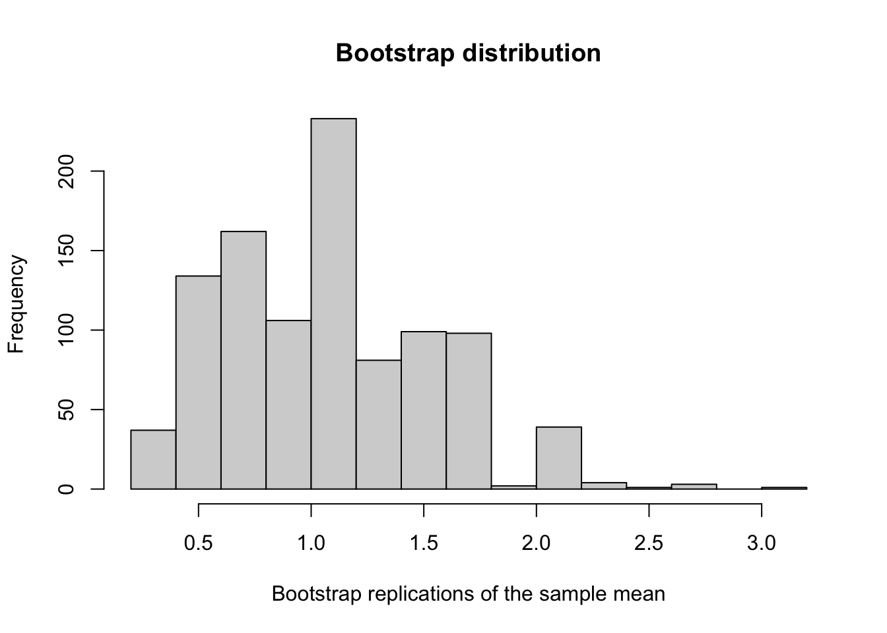
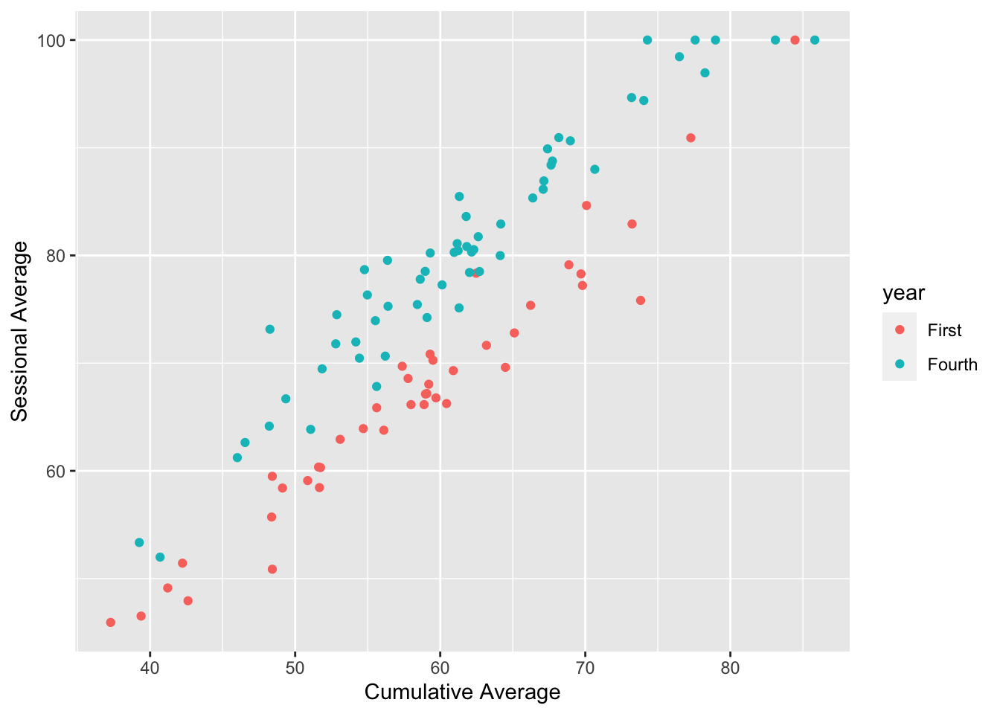

I will be posting some additional resources for STA130 here. I will update this page over the semester.
Welcome to STA130!
Part 1:
Part 2:
What visualizations have you learned so far?
Why do we need pipes, anyway? Let’s explore this using the palmerpenguins dataset.
library(tidyverse)
library(palmerpenguins) This dataset contains information about penguins.
glimpse(penguins)## Rows: 344
## Columns: 8
## $ species <fct> Adelie, Adelie, Adelie, Adelie, Adelie, Adelie, Ade…
## $ island <fct> Torgersen, Torgersen, Torgersen, Torgersen, Torgers…
## $ bill_length_mm <dbl> 39.1, 39.5, 40.3, NA, 36.7, 39.3, 38.9, 39.2, 34.1,…
## $ bill_depth_mm <dbl> 18.7, 17.4, 18.0, NA, 19.3, 20.6, 17.8, 19.6, 18.1,…
## $ flipper_length_mm <int> 181, 186, 195, NA, 193, 190, 181, 195, 193, 190, 18…
## $ body_mass_g <int> 3750, 3800, 3250, NA, 3450, 3650, 3625, 4675, 3475,…
## $ sex <fct> male, female, female, NA, female, male, female, mal…
## $ year <int> 2007, 2007, 2007, 2007, 2007, 2007, 2007, 2007, 200…We can see that each penguin belongs to a a species
unique(penguins$species)## [1] Adelie Gentoo Chinstrap
## Levels: Adelie Chinstrap GentooThere are 3 species in total.
Among the penguins with bill length greater than 35mm, what is the proportion of female penguins for each penguin species? One way we can determine this is by:
For simplicity, let’s remove penguins with missing sex and bill length first.
penguins <- filter(penguins, !is.na(sex) & !is.na(bill_length_mm))
head(penguins)## # A tibble: 6 x 8
## species island bill_length_mm bill_depth_mm flipper_length_… body_mass_g sex
## <fct> <fct> <dbl> <dbl> <int> <int> <fct>
## 1 Adelie Torge… 39.1 18.7 181 3750 male
## 2 Adelie Torge… 39.5 17.4 186 3800 fema…
## 3 Adelie Torge… 40.3 18 195 3250 fema…
## 4 Adelie Torge… 36.7 19.3 193 3450 fema…
## 5 Adelie Torge… 39.3 20.6 190 3650 male
## 6 Adelie Torge… 38.9 17.8 181 3625 fema…
## # … with 1 more variable: year <int>select(mutate(summarise(group_by(filter(penguins, bill_length_mm > 35), species), n_female = sum(sex == "female"), n=n()), prop_female = n_female / n), species, prop_female)## # A tibble: 3 x 2
## species prop_female
## <fct> <dbl>
## 1 Adelie 0.471
## 2 Chinstrap 0.5
## 3 Gentoo 0.487This is a method that works, but it is very messy. What if we found we made a mistake, or we realized we wanted to add in another nested function? This becomes an R nightmare!
We can also try reformatting the code, but it is still unpleasant to read and debug:
select(mutate(summarise(group_by(filter(penguins, bill_length_mm > 35),
species),
n_female = sum(sex == "female"),
n=n()),
prop_female = n_female / n),
species, prop_female)## # A tibble: 3 x 2
## species prop_female
## <fct> <dbl>
## 1 Adelie 0.471
## 2 Chinstrap 0.5
## 3 Gentoo 0.487This is an equivalent method, and is a lot nicer to read. However, it could be cleaner.
df <- filter(penguins, bill_length_mm > 35)
df <- group_by(df, species)
df <- summarise(df, n_female = sum(sex == "female"), n=n())
df <- mutate(df, prop_female = n_female / n)
df <- select(df, species, prop_female)
df## # A tibble: 3 x 2
## species prop_female
## <fct> <dbl>
## 1 Adelie 0.471
## 2 Chinstrap 0.5
## 3 Gentoo 0.487For this problem, pipes are probably the most elegant solution. It is very easy to understand and debug the code.
penguins %>%
filter(bill_length_mm > 35) %>%
group_by(species) %>%
summarise(n_female = sum(sex == "female"), n=n()) %>%
mutate(prop_female = n_female / n) %>%
select(species, prop_female)## # A tibble: 3 x 2
## species prop_female
## <fct> <dbl>
## 1 Adelie 0.471
## 2 Chinstrap 0.5
## 3 Gentoo 0.487There are other ways to do this. Can you think of any?
summarise and mutate?sum has a parameter na.rm. What does this do?Put single dollar signs ($) around your formulas if you want them to be in line with your text. For example:
My null hypothesis is $H_0: p_{heads} = 0.5$ and my alternative hypothesis is $H_A: p_{heads} \neq 0.5$.
is displayed as:
My null hypothesis is \(H_0: p_{heads} = 0.5\) and my alternative hypothesis is \(H_A: p_{heads} \neq 0.5\).
Put double dollar signs ($$) around your formulas if you do not want them to be in line with your text. For example:
My hypotheses are: $$ H_0: p_{heads} = 0.5 \\ H_A: p_{heads} \neq 0.5 $$
is displayed as:
My hypotheses are: \[ H_0: p_{heads} = 0.5 \\ H_A: p_{heads} \neq 0.5 \]
When using R Markdown, never copy and paste symbols from external sources.
Visualizations
Methods
Let us illustrate the bootstrap method with a very simple example.
Suppose that our parameter of interest is the population mean, \(\mu\). Naturally, our estimate of \(\mu\) is the sample mean, \(\bar{x}\). Our goal is to find a range of plausible values for \(\mu\). In other words, we want to construct a confidence interval. In order to construct a confidence interval, we need to approximate the sampling distribution of \(\bar{x}\). Thus, we apply the bootstrap method.
We observe a random sample of size 5:
data## [1] 0.92 0.72 0.10 3.10 0.62The bootstrap algorithm is as follows:
x1_B = sample(data, replace=TRUE)
x1_B## [1] 3.10 3.10 0.72 0.10 0.72(3.10, 3.10, 0.72, 0.10, 0.72) is a bootstrap sample. Notice that in our bootstrap sample, because we sample with replacement, there may be duplicate values.
mean(x1_B)## [1] 1.548bootstrap_mean = rep(NA, 1000)
for (i in 1:1000) {
bootstrap_sample = sample(data, 5, replace=TRUE)
bootstrap_mean[i] = mean(bootstrap_sample)
}
hist(bootstrap_mean, xlab="Bootstrap replications of the sample mean", main="Bootstrap distribution")
quantile(bootstrap_mean, c(0.025, 0.975))## 2.5% 97.5%
## 0.368 2.128The 95% confidence interval is (0.368, 2.128).
Note that the method that we used is also called the Monte Carlo bootstrap method, and the type of bootstrap confidence interval that we used is the percentile interval.
Reference: Efron, B., & Tibshirani, R. J. (1994). An introduction to the bootstrap. Chapman & Hall/CRC. https://doi.org/10.1007/978-1-4899-4541-9
Suppose that we have the following data (please note that this is not real data):
glimpse(data)## Rows: 100
## Columns: 3
## $ cumulative_avg <dbl> 54.97808, 61.31531, 59.21083, 68.86785, 61.16971, 63.1…
## $ sessional_avg <dbl> 76.32885, 85.47312, 68.03861, 79.12542, 81.09591, 71.6…
## $ year <chr> "Fourth", "Fourth", "First", "First", "Fourth", "First…data %>% ggplot(aes(x=cumulative_avg, y=sessional_avg, col=year)) +
geom_point() +
xlab("Cumulative Average") +
ylab("Sessional Average") +
guides(fill=guide_legend(title="Year"))
model <- lm(sessional_avg ~ cumulative_avg * d, data=data)
round(summary(model)$coef, 3)## Estimate Std. Error t value Pr(>|t|)
## (Intercept) 3.757 2.589 1.451 0.150
## cumulative_avg 1.088 0.044 24.797 0.000
## dFourth 8.287 3.550 2.334 0.022
## cumulative_avg:dFourth 0.021 0.059 0.357 0.722Let \(d_i\) be an indicator variable, such that \(d_i = 1\) if the student is in fourth year and \(d_i = 0\) if the student is in first year.
\[ \hat{y_i} = 3.757 + 1.088 x_i + 8.287 d_i + 0.021 x_i d_i \]
If d = 0, then: \[ \hat{y_i} = 3.757 + 1.088 x_i \]
If d = 1, then: \[ \begin{aligned} \hat{y_i} &= 3.757 + 1.088 x_i + 8.287 + 0.021 x_i \\ &= (3.757 + 8.287) + (1.088 + 0.021) x_i \\ &= 12.044 + 1.109 x_i \end{aligned} \]
Suppose that we split our data by the categorical variable, and fit two regression lines.
subset0 <- filter(data, data$year == "First")
subset1 <- filter(data, data$year == "Fourth")
model0 <- lm(subset0$sessional_avg ~ subset0$cumulative_avg)
model1 <- lm(subset1$sessional_avg ~ subset1$cumulative_avg)
round(summary(model0)$coef, 3)## Estimate Std. Error t value Pr(>|t|)
## (Intercept) 3.757 2.425 1.549 0.129
## subset0$cumulative_avg 1.088 0.041 26.479 0.000round(summary(model1)$coef, 3)## Estimate Std. Error t value Pr(>|t|)
## (Intercept) 12.044 2.533 4.754 0
## subset1$cumulative_avg 1.109 0.041 27.232 0The two fitted regression lines are:
\[ \hat{y_i} = 3.757 + 1.088 x_i \]
\[ \hat{y_i} = 12.044 + 1.109 x_i \]
What do you notice?